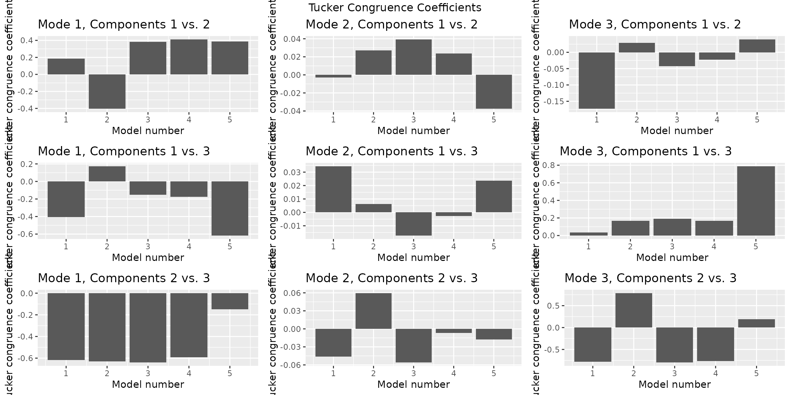
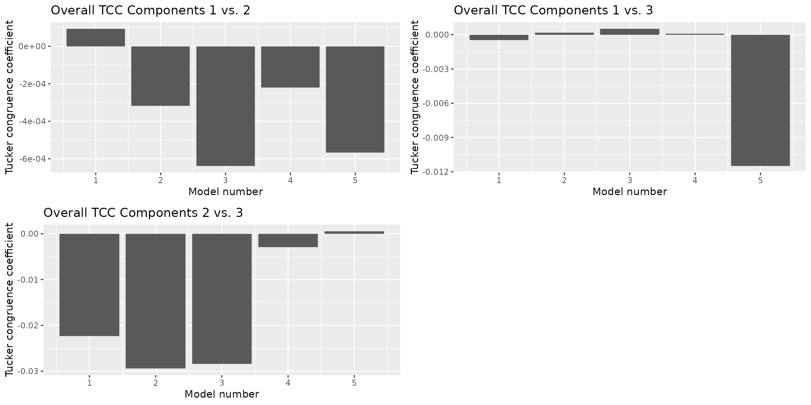

Fujita2023_analysis
Fujita2023_analysis.RmdProcessing the data cube
The data cube in Fujita2023$data contains unprocessed counts. The
function processDataCube() performs the processing of these
counts with the following steps:
- It performs feature selection based on the sparsityThreshold setting. Sparsity is here defined as the fraction of samples where a microbial abundance (ASV/OTU or otherwise) is zero.
- It performs a centered log-ratio transformation of each sample using
the
compositions::clr()function with a pseudo-count of one (on all features, prior to selection based on sparsity). - It centers and scales the three-way array. This is a complex subject, for which we refer to a paper by Rasmus Bro and Age Smilde. By centering across the subject mode, we make the subjects comparable to each other within each time point. Scaling within the feature mode avoids the PARAFAC model focussing on features with abnormally high variation.
The outcome of processing is a new version of the dataset. Please
refer to the documentation of processDataCube() for more
information.
processedFujita = processDataCube(Fujita2023, sparsityThreshold=0.99, CLR=TRUE, centerMode=1, scaleMode=2)Determining the correct number of components
A critical aspect of PARAFAC modelling is to determine the correct
number of components. We have developed the function
assessNumComponents() for this purpose. We give the
function our new dataset and specify the minimum and maximum number of
components to investigate and the number of randomly initialized models
to try for each number of components.
Note: this vignette reflects a minimum working example for analysing
this dataset due to computational limitations in automatic vignette
rendering. Hence, we only look at 1-3 components with 5 random
initializations each. These settings are not ideal for real datasets.
Please refer to the documentation of assessNumComponents()
for more information.
# Setup
minNumComponents = 1
maxNumComponents = 3
numRepetitions = 5 # number of randomly initialized models
numFolds = 8 # number of jack-knifed models
ctol = 1e-6
maxit = 200
numCores= 1
# Plot settings
colourCols = c("", "Genus", "")
legendTitles = c("", "Genus", "")
xLabels = c("Replicate", "Feature index", "Time point")
legendColNums = c(0,5,0)
arrangeModes = c(FALSE, TRUE, FALSE)
continuousModes = c(FALSE,FALSE,TRUE)
# Assess the metrics to determine the correct number of components
assessment = assessNumComponents(processedFujita$data, minNumComponents, maxNumComponents, numRepetitions, ctol=ctol, maxit=maxit, numCores=numCores)We will now inspect the output plots of interest for
Fujita2023.
assessment$plots$overview The overview plots show that we can reach ~35% explained variation if we
take 3 components. The CORCONDIA for those models are ~98.5, which is
well above the minimum requirement of 60. Based on this overview, either
2 or 3 components seems fine.
The overview plots show that we can reach ~35% explained variation if we
take 3 components. The CORCONDIA for those models are ~98.5, which is
well above the minimum requirement of 60. Based on this overview, either
2 or 3 components seems fine.
assessment$plots$TCC[[2]]
assessment$plots$TCCoverall[[2]]
assessment$plots$TCC[[3]]
assessment$plots$TCCoverall[[3]]
The Tucker Congruence Coefficients show us how similar the loading vectors in the same mode are to each other, between the various components. A value >=0.85 has been described as problematic in the literature. Neither in the two-component model, nor in the three-component model are the loadings overly similar to each other.
Jack-knifed models
Next, we investigate the stability of the models when jack-knifing out samples. This will give us more information to choose between 2 or 3 components.
modelStabilityCheck(processedFujita, numComponents=2, numFolds=numFolds, considerGroups=FALSE,
groupVariable="", colourCols, legendTitles, xLabels, legendColNums, arrangeModes,
continuousModes, ctol=ctol, maxit=maxit, numCores=numCores)$plot
#> Warning in get_plot_component(plot, "guide-box"): Multiple components found;
#> returning the first one. To return all, use `return_all = TRUE`.
modelStabilityCheck(processedFujita, numComponents=3, numFolds=numFolds, considerGroups=FALSE,
groupVariable="", colourCols, legendTitles, xLabels, legendColNums, arrangeModes,
continuousModes, ctol=ctol, maxit=maxit, numCores=numCores)$plot
#> Warning in get_plot_component(plot, "guide-box"): Multiple components found;
#> returning the first one. To return all, use `return_all = TRUE`. In the two-component jack-knifed models, there seems to be some
instability in the second component, mainly in the time mode. In the
three-component models there is more stability overall.
In the two-component jack-knifed models, there seems to be some
instability in the second component, mainly in the time mode. In the
three-component models there is more stability overall.
Model selection
We have decided that a three-component model is the most appropriate
for the Fujita2023 dataset. We can now select one of the
random initializations from the assessNumComponents()
output as our final model. We’re going to select the random
initialisation that corresponded the maximum amount of variation
explained for three components.
numComponents = 3
modelChoice = which(assessment$metrics$varExp[,numComponents] == max(assessment$metrics$varExp[,numComponents]))
finalModel = assessment$models[[numComponents]][[modelChoice]]Finally, we visualize the model using
plotPARAFACmodel().
plotPARAFACmodel(finalModel, processedFujita, colourCols, legendTitles, xLabels, legendColNums, arrangeModes,
continuousModes = c(FALSE,FALSE,TRUE),
overallTitle = "Fujita PARAFAC model")
#> Warning in get_plot_component(plot, "guide-box"): Multiple components found;
#> returning the first one. To return all, use `return_all = TRUE`.